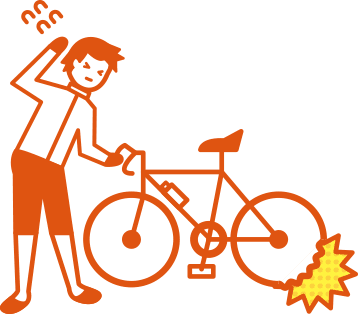

自転車ロードサービス｜au損保
- au損保TOP
- 自転車向け保険 Bycle Best
- 自転車ロードサービス
自転車ロードサービス(プレミアム) 
だけのサービス！


自転車が事故や故障等により自力で走行できなくなってしまった場合に、｢自転車ロードサービスカー｣で
ご希望の場所まで搬送します。24時間365日トラブル現場に駆けつけます。
例えばこんな時に自転車を搬送するサービスです！
 サイクリングに出かけたら、突然タイヤがパンクし走行不能に。
サイクリングに出かけたら、突然タイヤがパンクし走行不能に。
買い物中にチェーンが外れて走行不能に。
-
POINT 1
いつでも力になります
夜間も休日も
24時間365日対応！
-
POINT 2
遠出も、ご近所も
50kmまで無料搬送！※
- ※自走不能となった場所がご自宅から1kmを超えていれば、ご利用可能！
-
POINT 3
全国、ほとんどの地域で
安心の全国ネット！
（2016年11月4日現在）
-
POINT 4
家族タイプでも安心の回数
年4回まで利用可能！※
- ※保険期間が2年のご契約の場合は、1年目・2年目それぞれ4回までとなります。
自転車ロードサービス4つのポイント！
- 注）「ケガの保険 交通事故」「ケガの保険 日常の事故」 あうて「スポーツ・レジャー＋ゴルフ」にセットされている
自転車ロードサービス「ベーシック」の内容については、こちら
ご利用方法
お電話またはスマホアプリ「自転車の日」から、簡単に要請できます！
- 自転車ロードサービス
デスクへ連絡
自転車ロードサービスデスク
0077-78-8365
受付時間24時間365日
スマホアプリ「自転車の日」から要請
かんたんステップ！到着時間も分かるから安心です
- TOP画面から
ロードサービスを
タップ - 要請をタップ
- 現在地をGPSで
確認し、要請 - 到着までの時間が
分かるスグレモノ！※
※対応するロードサービスカーに限ります
自転車ロードサービスカー到着
自転車ロードサービスご利用者の声
～感謝の声が続々届いています～
通勤中に自転車がパンクしてしまい搬送してもらいました。駆けつけたスタッフの対応も大変親切でした。ロードサービスがあることが「自転車向け保険 Bycle」の加入の決め手だったので、加入して本当に良かったです。
走行中にギアが故障し、アプリからロードサービスを要請し利用させていただきました。
スタッフの対応もよく大変感謝しています。

ロードサービスに魅力を感じて、「自転車向け保険 Bycle」に加入したので、何かあったら連絡することは頭に入っていました。自転車がパンクし利用しました。自分で自転車を運ぶ必要がないので、大変便利でした。
自転車が故障した場所が自宅から遠かったので、ロードサービスがなかったら途方にくれていたと思います。本当にありがとうございました。
サービス提供地域
- ■全国722拠点で対応。(2016年11月4日現在）
- ■一部離島などは対象外です。
「自転車ロードサービス」は、株式会社プレステージ・インターナショナルとの連携により運営されています。
[注意事項]
・本サービスは、事故または故障により自転車が自力走行不能（自転車が物理的もしくは機能的に走行できない状態、または法令により走行が禁じられている状態）となった場合が対象です。搬送距離等には限度があります。サービスの提供条件など、詳細は「自転車ロードサービスご利用規約」をご確認ください。
・本サービスをご利用できる方は、対象となる保険契約の補償の対象となる方（被保険者）です。
・サービス利用者が未成年の場合は、親権者の同意確認が必要となります。
・弊社は事前に通知することにより、本サービスの提供を中止または終了することがございます。また弊社は本サービスの内容を、予告なく変更することがございます。あらかじめご了承ください。
注）上記は概要をご説明したものです。詳しくは「自転車ロードサービスご利用規約」をご確認ください。
- au損保TOP
- 自転車向け保険 Bycle Best
- 自転車ロードサービス
B16D310429[1612]